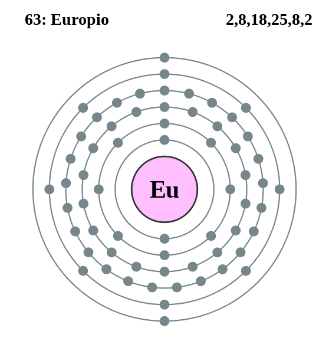

|
|
||
|
EUROPIO El europio se detectó por primera vez en 1890 y se aisló en una forma relativamente pura en 1901. El europio tiene una apariencia metálica de color blanco plateado y se enciende en el aire a una temperatura de entre 150 y 180 °C. Es tan duro como el plomo y bastante dúctil. Es el más reactivo de los metales de tierras raras, se oxida rápidamente en el aire y reacciona con agua. Se han reconocido 17 isótopos de europio. Este elemento se encuentra mayoritariamente en los minerales bastnasita y monacita y se ha identificado espectroscópicamente en el Sol y en determinadas estrellas. Los isótopos de europio se estudian para su posible uso en aplicaciones de control nuclear, mientras que se usa plástico tratado con europio como material para láseres. |
 |
DATOS Número Atómico: 63 Peso Atómico: 152.00 Electronegatividad: 1.2 Configuración Electrónica: 4f76s2 Estados de Oxidación: +3,2 No. de Electrones de Valencia: 2 |